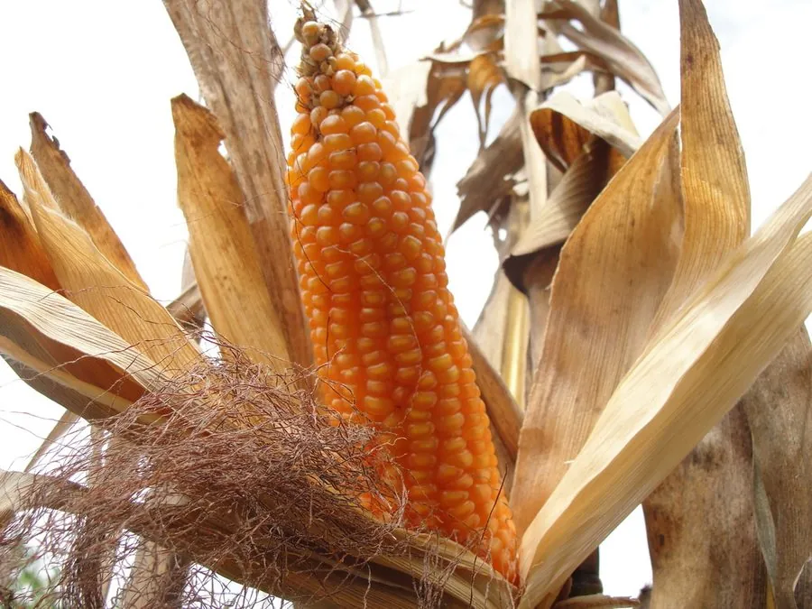

农作物与经济植物 · 植物界
玉米 Zea mays

玉米是全球产量最高的粮食作物之一，籽粒可作主粮、饲料与工业原料，被称为“黄金作物”，用途极广。
- 分类
- 门被子植物门纲单子叶植物纲目禾本目科禾本科属玉米属
- 栖息环境
- 热带与温带平原，喜高温、强光和肥沃疏松土壤
- 地理分布
- 原产墨西哥与中美洲，现广泛栽培于全球温带与热带地区
- 保护级别
- 暂无评估（栽培作物）
物种志
玉米是一年生高大草本，株高 1–3 m，茎秆粗壮、实心，叶片宽大呈线状披针形，互生。雌雄同株异花：雄花序为顶生的圆锥花序，俗称“天花”；雌花序为腋生的肉穗花序，即果穗，外被多层苞叶，顶端露出许多丝状花柱，即玉米须。果穗上的籽粒成行排列，颜色有黄、白、紫等。
玉米原产墨西哥及中美洲，由野生类蜀黍在约 9000 年前驯化而来，是美洲原住民的主粮，后随大航海时代传播到世界各地。它喜高温、光照充足和肥沃土壤，适应性广，从热带到温带均有栽培。除食用和饲用外，玉米还可加工淀粉、葡萄糖、酒精和食用油，玉米芯和秸秆可作燃料与工业原料。现代杂交育种使玉米产量大幅提高，美国、中国、巴西是主要生产国。
形态与习性
- 株高1–3 m，茎秆粗壮实心
- 花雌雄同株异花
- 果穗腋生肉穗花序，外被苞叶
- 玉米须雌花的柱头与花柱
- 原产地墨西哥及中美洲
- 主要用途主粮、饲料、淀粉与酒精
- 产量地位全球谷物产量前列
趣味知识
- 玉米原产美洲，约 9000 年前由类蜀黍驯化而来。
- 一根玉米上的“玉米须”其实是雌花的柱头和花柱，每根对应一粒籽粒。
- 玉米用途极广，从饲料到酒精、淀粉、生物塑料都离不开它。